Highlander Space Program | Avionics Hardware Lead
Supporting liquid rocket avionics through PCB design, bring-up, validation, and field integration across the test stack.
Student at UCR focused on electronics and designing PCBs for my rocketry team. Outside of engineering, you'll usually find me training judo and wrestling, or hunting down the next coffee shop worth ranking for pastries.
Armando Zepeda
Embedded Hardware | Aerospace & Underwater Systems
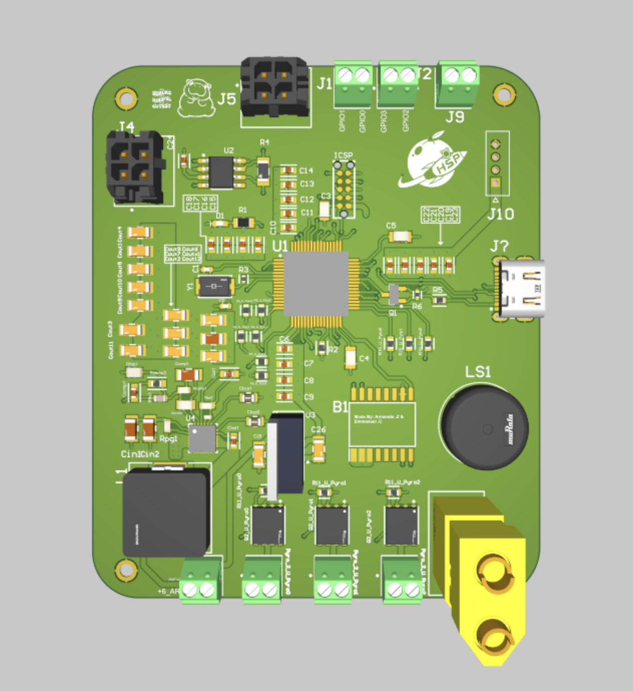
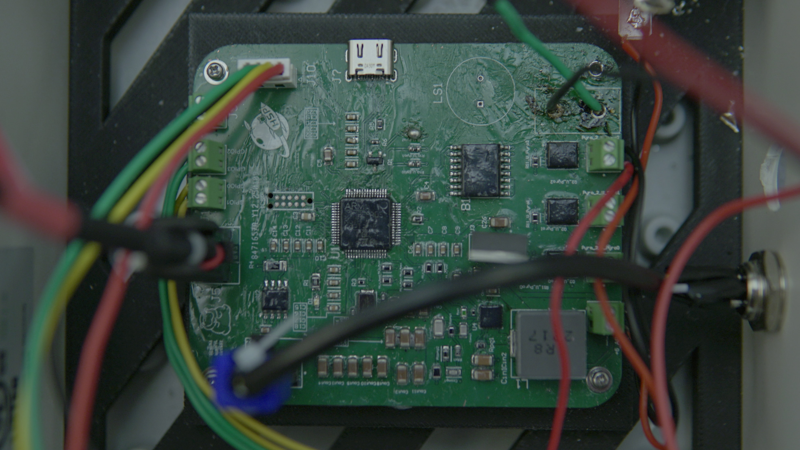

Highlander Space Program
Project Poseidon // Avionics Hardware Lead
Designed a 4-layer STM32-based control PCB for liquid rocket valve actuation and ignition systems. Integrated CAN/UART communications and supported avionics bring-up through cold-flow and static-fire testing.
Highlander Space Program
Project Clementine // Ground Information Controller
Designed an STM32-based ground interface PCB integrating Ethernet, CAN, UART, USB, SPI Flash, and MicroSD for rocket telemetry, valve control, and high-speed data logging.
Supported hardware bring-up, CAN communications validation, assembly, and bench testing across the ground support avionics stack.
Highlander Space Program
Project Clementine // Ground Interface Revision
Redesigned the original ground interface PCB into a more compact GIC LITE platform, reducing board area by 57% while improving protection features and lowering BOM cost.
Added 3-channel servo actuation, dual pyro ignition support, fused 3.3V/8V power rails, and high-side MOSFET load switching.
Highlander Space Program
Project Clementine // Embedded Hardware Integration
Designed a modular sensor interface system for the rocket DAQ enclosure, enabling organized integration between external instrumentation and onboard data acquisition hardware.
Developed custom connector interface PCBs to simplify sensor routing, improve maintainability, and accelerate hardware bring-up and troubleshooting during test operations.
Highlander Space Program
Project Clementine // Actuation Control Hardware
Designed a multi-channel servo control PCB for embedded actuation systems, integrating CAN communications, onboard power circuitry, and dedicated servo output interfaces.
Took the design from PCB layout through manufactured hardware and bench validation, supporting reliable subsystem integration within the rocket avionics architecture.
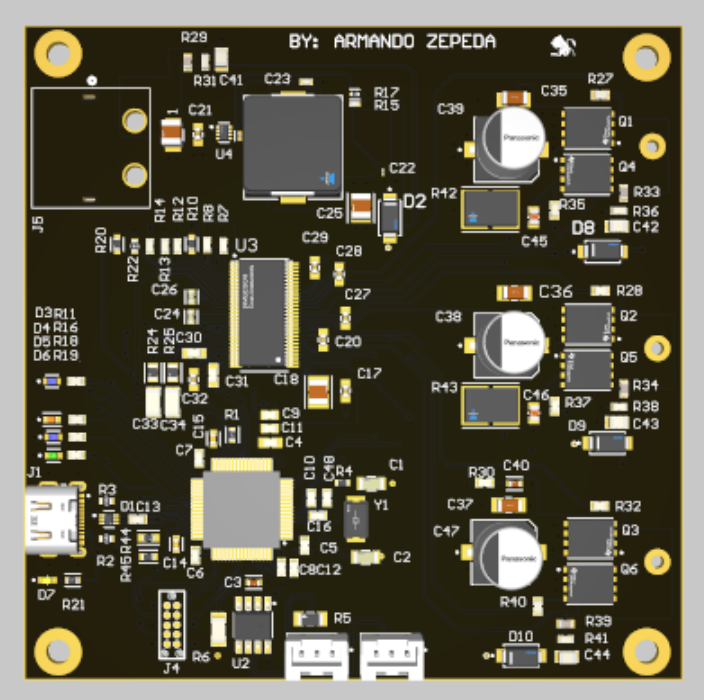
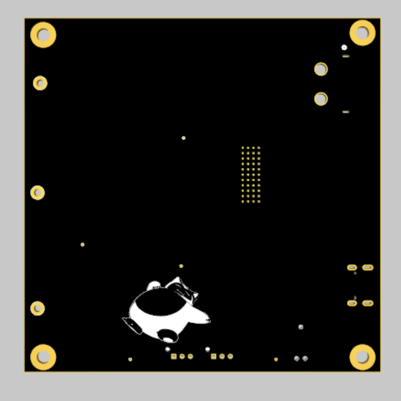
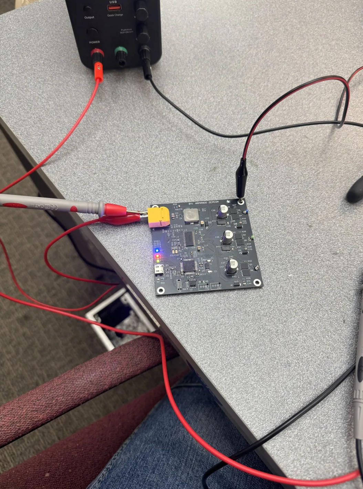

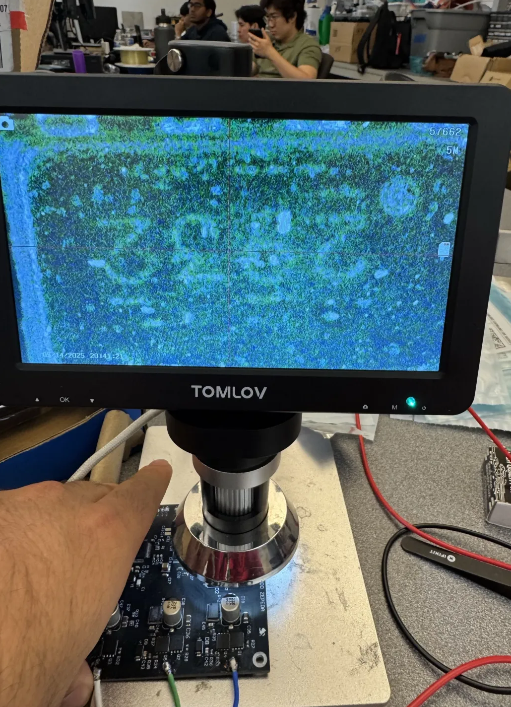
Project Trident
Designed and assembled a custom motor control PCB for underwater subsystem testing, integrating embedded control electronics and high-current power circuitry into a compact hardware platform.
Led the hardware workflow from CAD through bring-up, including bench power validation, rework, subsystem wiring, and integration with the Trident electronics test platform.
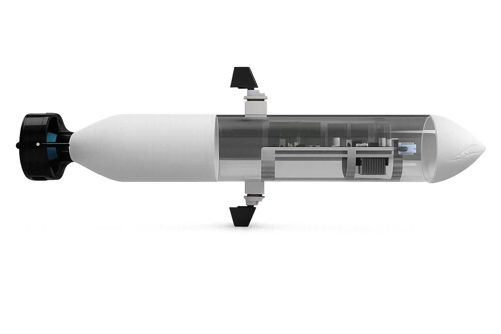
Project Trident Photo Reel
Platform View
The platform architecture ties embedded control electronics, power distribution, and mechanical packaging into one modular underwater test platform.
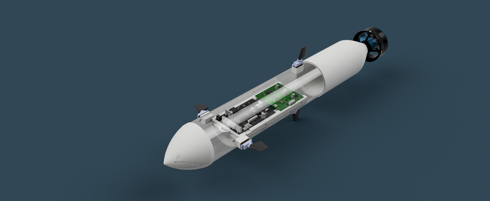
Physical Test Stand
The physical Trident apparatus serves as a bench-ready electronics test platform used to evaluate embedded hardware, packaging strategy, and subsystem integration in a controlled environment. The next revision will focus on sealed underwater operation.
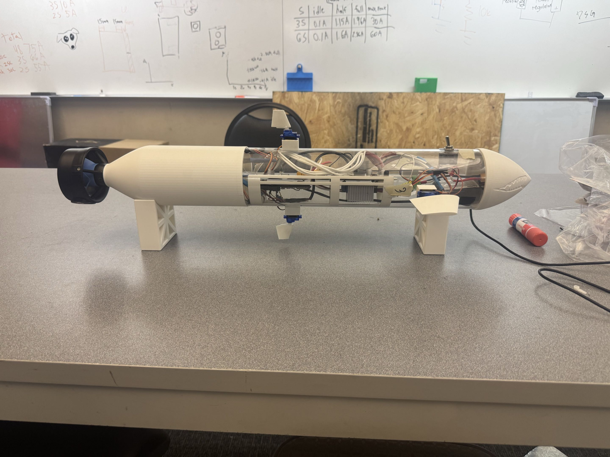
Tray Integration
This integration stage validates subsystem packaging, power distribution, board fitment, and electronics tray architecture within the Trident test platform.
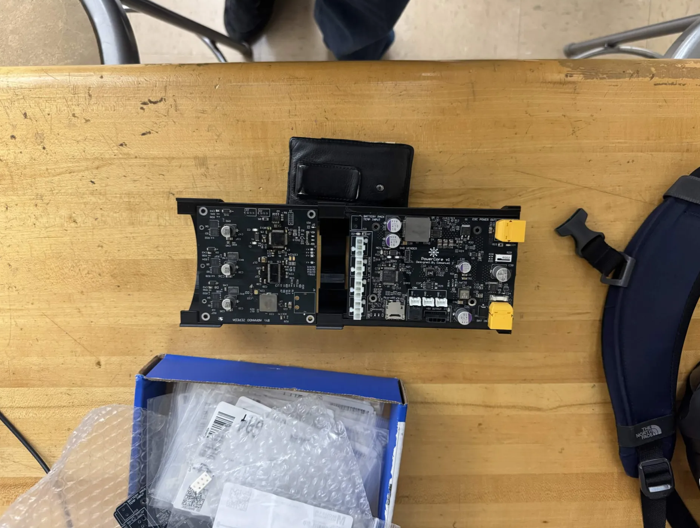
Initial Power-Up
This first bring-up captures the motor board waking up on the bench, marking the transition from standalone hardware to an integrated embedded control system.
CAN Bring-Up
This validation stage confirms CAN communications, control-interface functionality, and integration within the broader Trident electronics stack.
Next Mission
Right now school and ongoing engineering work are taking most of the bandwidth, but development is still moving forward. The long-term goal remains a water-ready Trident platform with integrated custom electronics and validated subsystem hardware.
Extra moments captured.
Operations
At the controls, hardware work turns into live operations, where clean interfaces and trustworthy systems support every call.
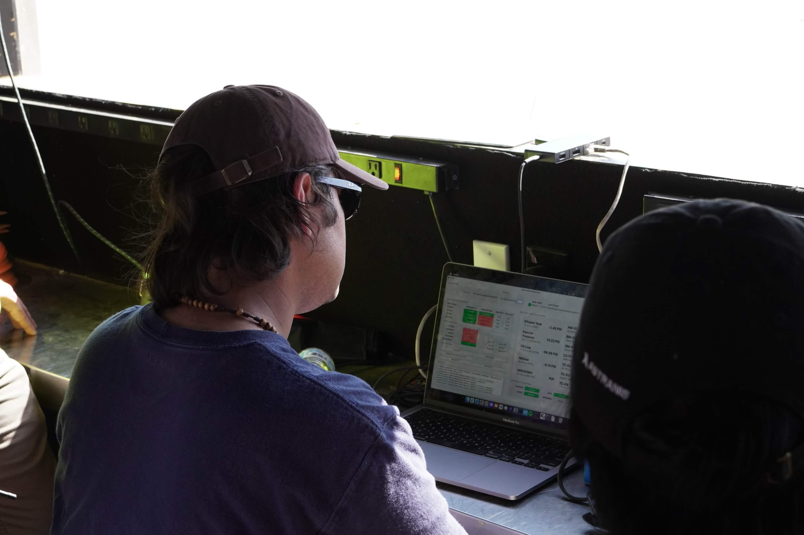
CAN Validation
Early validation through the interface helps prove command flow, system response, and communication integrity before wider integration.
Avionics Team
Behind every cold-flow or static-fire win is a crew handling electronics, troubleshooting, and test-day execution together.
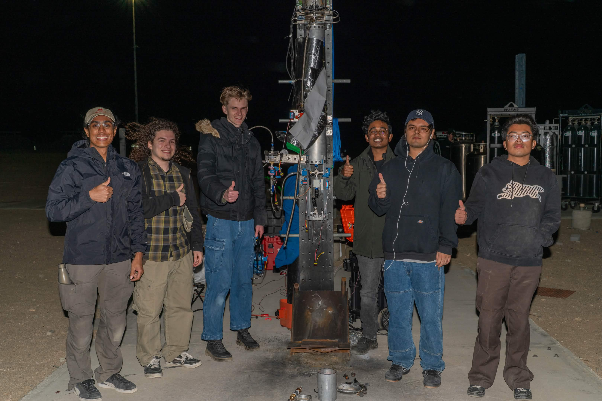
Summer 2026 // Hiawatha, Iowa
Electrical Engineering internship focused on ruggedized systems, hands-on lab execution, and deployment-oriented hardware support.